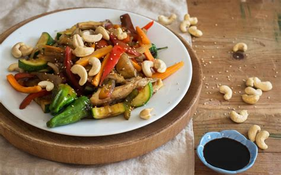

Wok

An amazing mix of flavours, intensely heated to perfect crispyness.
Probably my favourite food. Just use your protein of choice, whatever vegetables you cand find and rummage your local Asian market for the sauces. Use a carboon steel wok if you have one.
Ingredients
- Tofu, tempeh or yuba
- Vegetables
- Cashews
- Garlic
- Ginger
- Various sauces
Steps
- Chop tofu and vegetables
- Blend your sauces.
- Pre-fry the tofu.
- Fry the vegetables at very high heat in oil.
- Add tofu and sauces.
- Serve with rice.
Home Page